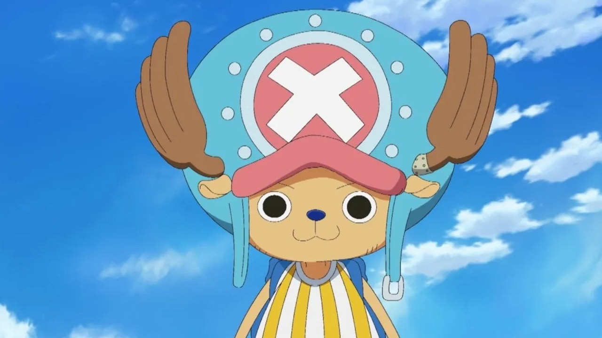
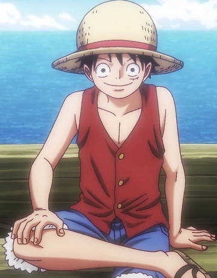
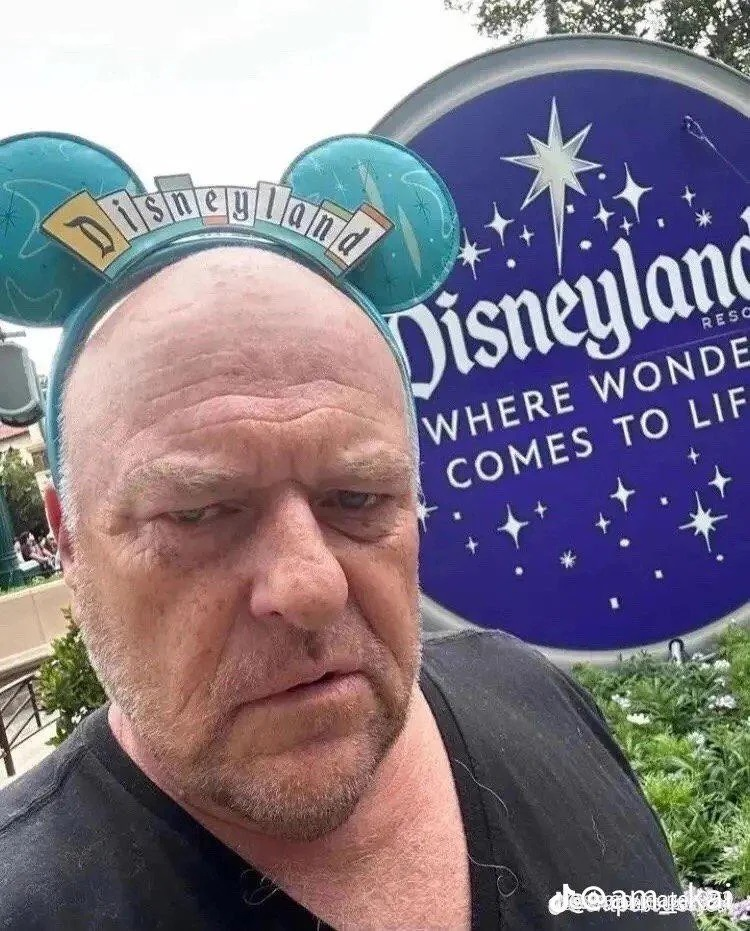

Me llamo Mincito, tengo 23 años y nací en la clínica Santa María en Providencia, me da mucha paja que nos obliguen a tener religión en este instituto. Está bien creer en algo, pero no me gusta que me obliguen a hacerlo, o almenos a escucharlo. Tengo amigos en la U. Está el Benja, la Sofía, la Karina, la Claudia y no voy a incluir a más porque son caleta. Bueno, eso. Siempre he tenido la sensación de que terminaré envuelto envuelto en un movimiento terrorista. Me volveré un dictador y moriré por el bien común. Igual entrete.



Ir a la Página HANK